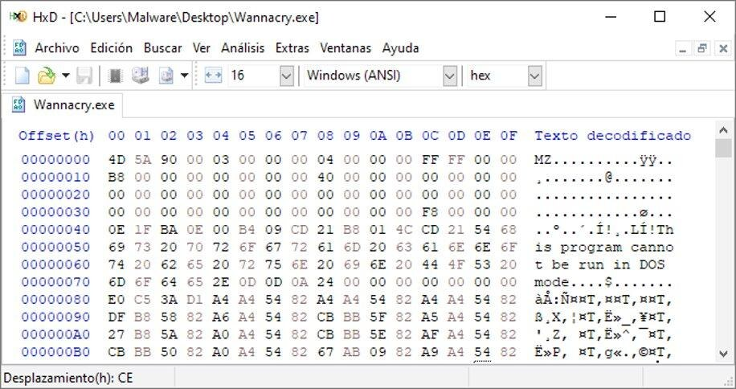
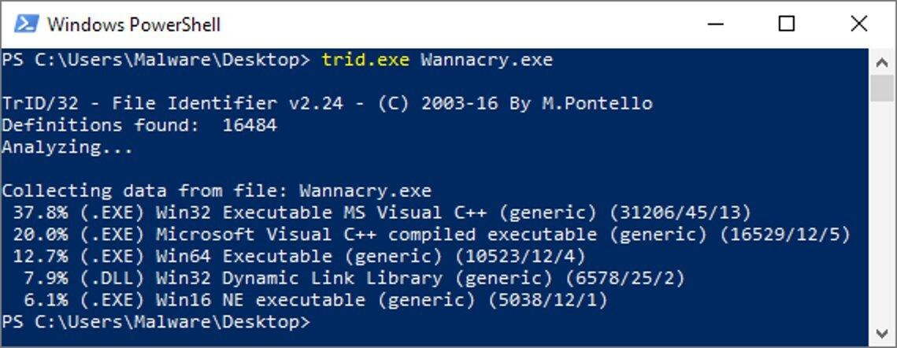
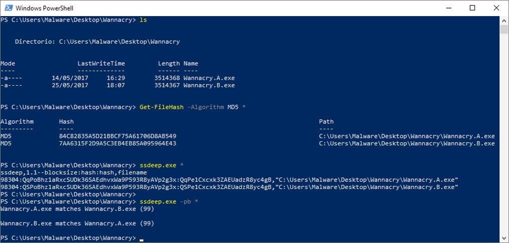
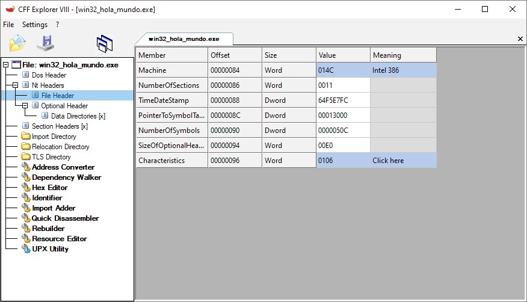
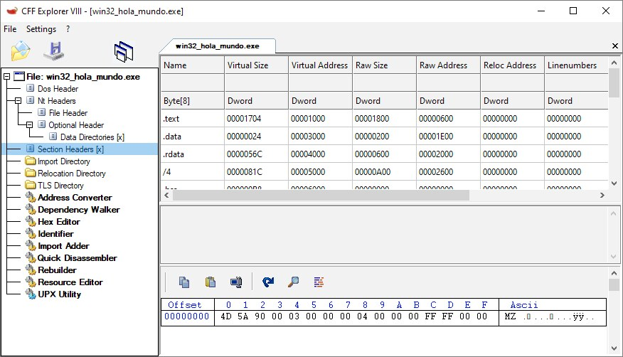
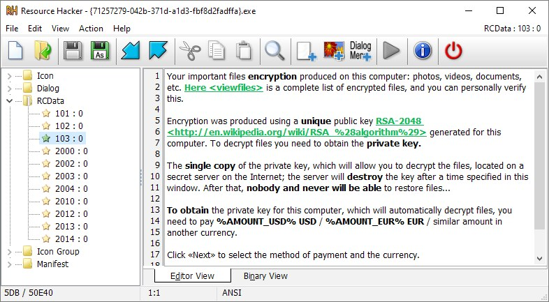

Análisis estático en Windows
Con la arquitectura x86, el ensamblador y el formato PE ya vistos en el bloque anterior, este módulo aplica esos conocimientos a un caso práctico: examinar una muestra sospechosa sin ejecutarla. El análisis estático consiste precisamente en eso —inspeccionar el fichero tal cual, byte a byte si hace falta, para extraer el máximo de información posible antes de arriesgarse a lanzarlo en un entorno controlado.
1 Qué es el análisis estático y por dónde empezar
El análisis estático estudia un fichero sospechoso sin ejecutarlo: se examinan su contenido, su estructura y sus metadatos para deducir qué es y qué podría hacer. Es más seguro que el análisis dinámico (módulo 11) porque el código nunca llega a correr, aunque tiene un límite claro: el malware puede estar empaquetado, cifrado u ofuscado, lo que oculta buena parte de la información útil a simple vista.
El primer paso habitual, antes de entrar en detalle con herramientas locales, es consultar un motor antimalware o metabuscador como VirusTotal: se sube el fichero (o se consulta su hash) y se compara contra decenas de motores antivirus a la vez. Un resultado positivo en muchos motores es un indicio fuerte, aunque no una prueba definitiva —y un resultado limpio tampoco garantiza que el fichero sea inofensivo, sobre todo si es una muestra nueva u ofuscada. Es un punto de partida rápido, no un sustituto del resto de técnicas de este módulo.
2 Determinar el tipo real de fichero
Un fichero puede llevar una extensión engañosa (.jpg, .pdf...) mientras que en realidad es un ejecutable. El tipo real no lo decide la extensión, sino los primeros bytes del fichero: la firma o "magic bytes". En Windows, todo ejecutable PE (.exe, .dll, .sys) empieza por los bytes 4D 5A, que en ASCII son las letras "MZ" —las iniciales de Mark Zbikowski, uno de los creadores del formato en los años 80.

Esta comprobación se puede hacer de dos formas:
Manual
Abrir el fichero con un editor hexadecimal y leer los primeros bytes a simple vista, comparándolos con firmas conocidas.
Con herramientas
Identificadores de tipo de fichero como TrID/TrIDNet o el propio CFF Explorer, que comparan la firma contra una base de datos de miles de formatos y estiman la probabilidad de cada coincidencia.

3 Huellas del fichero: hashing criptográfico y hashing difuso
Un hash criptográfico (MD5, SHA-1, SHA-256) es una huella digital única del fichero: cambiar un solo bit del contenido produce un hash completamente distinto. Sirve para identificar una muestra sin ambigüedad, compararla contra bases de datos de amenazas conocidas (VirusTotal, Hybrid Analysis) y verificar que dos copias son exactamente el mismo fichero.
| Entorno | Cómo calcular el hash |
|---|---|
| Windows (PowerShell) | Get-FileHash -Algorithm MD5 archivo.exe (también admite SHA1, SHA256...) |
| Linux | md5sum, sha1sum, sha256sum |
| macOS | md5, shasum |
| Interfaz gráfica | HashMyFiles: calcula varios algoritmos a la vez sobre uno o varios ficheros |
El problema del hash criptográfico es que es "todo o nada": si el atacante cambia un solo byte de la muestra (algo trivial de automatizar), el hash resultante no se parece en nada al anterior, aunque el fichero sea funcionalmente idéntico. Para detectar variantes muy similares entre sí se usa el hashing difuso (fuzzy hashing), como el algoritmo ssdeep (basado en CTPH, Context Triggered Piecewise Hashing): en lugar de un valor binario, ssdeep calcula un porcentaje de similitud entre dos ficheros, y ese porcentaje es alto incluso ante pequeñas modificaciones.

Otras variantes de hash difuso o especializado que aparecen con frecuencia en herramientas de análisis:
Imphash
Hash calculado a partir de la tabla de importaciones del PE (módulo 9); útil porque muestras de la misma familia de malware suelen importar las mismas funciones en el mismo orden. Se puede calcular con el módulo pefile de Python.
Authentihash
Hash calculado excluyendo los campos que cambian al firmar digitalmente un ejecutable; permite comparar binarios firmados sin que la firma en sí afecte al resultado.
4 Extracción de cadenas de texto y metadatos de compilación
Aunque el código máquina de un ejecutable no sea legible directamente, el fichero suele contener cadenas de texto en claro: mensajes de error, rutas de fichero, claves de registro, direcciones IP o URL, nombres de funciones de la API de Windows... La herramienta clásica para extraerlas es strings (también existe la versión gráfica BinText), que recorre el fichero completo buscando secuencias imprimibles de cierta longitud mínima, tanto en codificación ASCII como Unicode (parámetros -a y -u en la versión de línea de comandos, junto con -n para fijar la longitud mínima).
Otro dato disponible sin ejecutar nada es el timestamp de compilación del ejecutable, guardado en el campo TimeDateStamp del File Header del PE (visto en el módulo 9) y visible con un editor de recursos como CFF Explorer. Hay que tomarlo con cautela: es un valor que el propio desarrollador —incluido el autor del malware— puede modificar a voluntad, así que sirve como pista orientativa, nunca como prueba concluyente de cuándo se creó la muestra.

5 Importaciones, exportaciones y estructura de secciones
Repasando el módulo 9: la tabla de importaciones (sección .idata) enumera las funciones de otras DLL que el programa necesita, y la tabla de exportaciones (.edata) enumera las funciones que el propio binario ofrece a otros (típico de las DLL). Examinar las importaciones con un editor de recursos PE es una de las técnicas de análisis estático más reveladoras: el conjunto de funciones importadas dibuja, con bastante precisión, qué es capaz de hacer el programa.
| Función importada (ejemplos) | Qué sugiere |
|---|---|
| CreateService | Instalación como servicio de Windows: mecanismo habitual de persistencia |
| OpenMutex | Comprobación de si ya existe una instancia del malware en ejecución |
| RegOpenKey | Lectura o escritura en el registro, a menudo para persistencia o configuración |
| GetKeyState | Posible keylogging: consulta el estado de las teclas del teclado |
| CheckRemoteDebuggerPresent | Técnica anti-debugging: detecta si hay un depurador adjunto al proceso |
| WriteProcessMemory | Escritura en la memoria de otro proceso: habitual en inyección de código |
| connect | Apertura de una conexión de red saliente |
Estas mismas herramientas permiten inspeccionar la tabla de secciones del PE, con el nombre, el tamaño y —muy importante para detectar anomalías— los permisos de memoria (lectura, escritura, ejecución) de cada sección.

6 Análisis de recursos embebidos
La sección .rsrc de un PE (módulo 9) puede contener mucho más que iconos y cuadros de diálogo estándar: cadenas de texto completas, imágenes o incluso ficheros adicionales embebidos por el propio malware. Una herramienta como Resource Hacker permite navegar y extraer estos recursos, agrupados por tipo —el grupo RCData ("Resource Custom Data") es donde suele aparecer contenido a medida definido por el desarrollador del programa.

Encontrar así, directamente en los recursos del fichero, el texto de una nota de rescate es un ejemplo perfecto de por qué merece la pena revisar esta sección: información que en análisis dinámico solo se vería tras ejecutar el malware y sufrir el cifrado, aquí queda expuesta sin ningún riesgo.
7 Cómo encaja este bloque con el análisis de malware
Todas las técnicas de este módulo comparten una misma lógica: extraer el máximo de información de una muestra sin correr el riesgo de ejecutarla. De los motores antimalware como primer filtro, a la identificación del tipo de fichero, las huellas (hash) para catalogarlo, las cadenas y metadatos para intuir su comportamiento, y la estructura interna del PE —importaciones, secciones, recursos— para confirmarlo con detalle técnico. Cuando el análisis estático llega a su límite, normalmente porque la muestra está empaquetada u ofuscada, el siguiente paso es observar qué hace realmente al ejecutarla: el análisis dinámico del módulo 11.